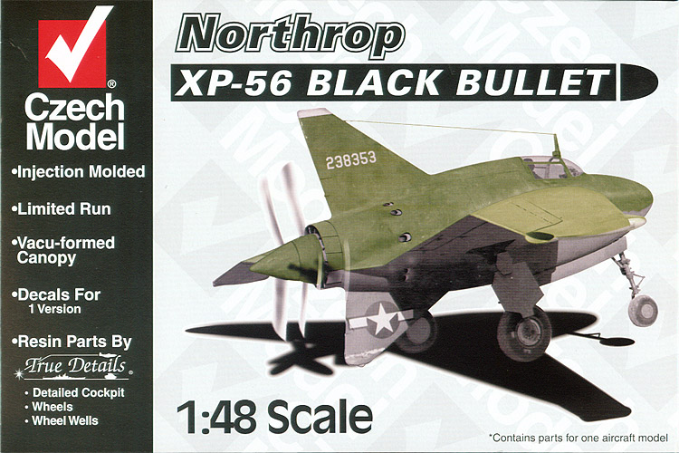
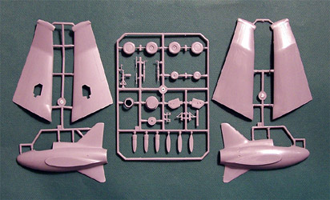
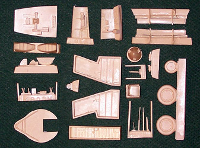
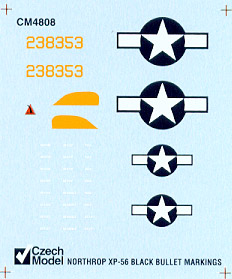

{kind=link}
{kind=link}
{kind=link}


Czech Models 1/48 Northrop XP-56 “Black Bullet”

Kit #4808
MSRP $29.95
Images and text Copyright © 2005 by Matt Swan
Developmental Background
The Northrop XP-56 was the first USAAF fighter aircraft to be built by Jack Northrop’s third attempt at an independent aircraft company, Northrop Aircraft Inc. of Hawthorne, California, the forerunner of today's Northrop Corporation. The Northrop XP-56 was evolved as a response to Circular Proposal R-40C, which was issued on November 27, 1939. It called for a fighter that would be much more effective than any extant--with a top speed, rate of climb, maneuverability, armament, and pilot visibility, all of which would be far superior to those of any existing fighter. The Army specifically mentioned in R-40C that they would consider aircraft with unconventional configurations.
Designated N2B by Northrop was a unique tailless interceptor made entirely of magnesium. The N2B was a swept-flying-wing aircraft with no forward-mounted elevators. Northrop proposed to use the new and untried Pratt & Whitney X-1800-A3G (H-2600) liquid-cooled engine, mounted behind the pilot's cockpit and driving a pair of contra rotating pusher propellers.
Shortly after development of the XP-56 began, Pratt & Whitney abandoned all work on its X-1800 liquid-cooled engine. This left the XP-56 out on a limb, without an engine. Northrop's design team reluctantly decided to switch to the less-suitable Pratt & Whitney R-2800 air-cooled radial engine. Although the R-2800 engine was more powerful it was also wider. The larger diameter of the radial engine required in turn that the fuselage be widened in order to accommodate it. These changes resulted in an increase in weight.
The plane had a short and stubby dorsal fin and a very large ventral fin, so large, in fact, that it very nearly scraped on the ground when the aircraft stood on its landing gear. The cantilever mid-mounted wing had elevons that functioned both as ailerons and wing flaps mounted on the trailing edge of the drooping wing tip. Air ducts for cooling of the radial engine were located on the wing leading edge. The main wheels retracted into the wing, and the nose wheel retracted into the fuselage. Proposed armament was to be two 20-mm cannon and four 0.50-inch machine guns, all mounted in the nose.
The "Black Bullet" was first flown on 30 September 1943 but was destroyed during a taxi test, the port main wheel tire blew out during a high-speed taxiing run and the aircraft somersaulted over onto its back. It was totally wrecked. The second prototype was first flown on 23 March 1944 and had a bigger vertical stabilizer and an improved wingtip design incorporating a yaw control system. The center of gravity was moved further forward. A new form of rudder control was fitted which made use of air bellows at the wing tips which operated a set of split flaps for directional control. The control of the bellows was achieved by valving air to or from the bellows by means of wingtip venturis.
On March 23, 1944, test pilot Harry Crosby took the second XP-56 up for the first time. However, Crosby found it impossible to lift the nose wheel off the ground at speeds below 160 mph, and the test flight lasted only a few minutes. The second flight went better, and it was found that the nose heaviness went away after the landing gear was retracted. However, the aircraft was severely underpowered for its weight, and only relatively low speeds could be attained, much less than the projected maximum speed of 465 mph at 25,000 feet.
While awaiting the beginning of the wind tunnel testing, further flight test trials were undertaken with the XP-56. On the tenth test flight, the pilot complained of extreme tail heaviness on the ground, low power, and excessive fuel consumption. After consultations, it was concluded that the XP-56 was basically not airworthy, and that it was just too dangerous to continue flight tests with it. Shortly thereafter, the whole project was abandoned. The further development of higher-performance piston-engined fighters was futile in any case, since the advent of jet propulsion would soon bring the era of propeller-driven fighters to a close.
Although the XP-56 project was a failure, it was not a total loss for Northrop, since the company had learned a lot about flying wing designs. This data gained during the XP-56 project was put to good use in later Northrop designs such as the XB-35 piston- engined bomber, the YB-49 jet-powered bomber, and the B-2 stealth bomber. Additional advances were made handling new materials for aircraft construction, magnesium, and a new construction process, Heliarc welding. Heliarc welding became a standard method for fabricating metals and Northrop patented a special welding torch for this purpose. In 1946, the surviving “Black Bullet” was given to the NASM collection. In 1982 it was transferred to Northrop for restoration.
The Kit
Issued in 2001 this is a classic short run kit, the primary parts of the model are done with low pressure injection molding using a medium gray polystyrene. Most of the interior detail parts are cast in light tan resin with a pair of vacuform canopies all packaged in a small box that opens from one end rather than have a lift off lid. Personally I do not like this style of box as I feel it gives too much opportunity for parts to be lost from the box and the modeler does not have the inverted lid to use as a parts tray during construction. Inside the box the plastic pieces are contained in a large poly bag, the resin pieces in a smaller bag and the small decal sheet is slid into the directions. This all seems adequate to protect the various components from shipping damage.
The plastic pieces are well done showing very little flash, medium sized sprue connectors and no sink holes. All the exterior pieces display very fine engraved panel lines, maybe almost too fine. I would be concerned about them disappearing under the paint. The inside surfaces of the wings and fuselage have some large injector pins that will need to be removed prior to construction. The wheels/tires are provided as two-piece assemblies and are not flattened. The few pieces that you would expect to see mold separation lines on actually do not seem to have any. Overall, clean up of the parts looks to be an easy job with no expected difficulties. All together we have 31 plastic injection molded pieces in the box.
Looking at the resin pieces these all look to be very nicely done, as I have come to expect from Czech Models. We have average sized pour stubs on most of the pieces, very complete casting with no evident micro bubbles or missing corners. General detail of the parts is very good and there is no evident warpage. In this group of parts we have all the cockpit interior pieces except for the rudder pedals – those are in the plastic group. Not too sure how that happened. The seat features cast seatbelts that lay pretty flat and could probably use to be replaced with some more three dimensional aftermarket belts. The dash and wrap around side panels are well detailed with lightly raised instruments and dial faces. Also included in the resin package are the landing gear bays, weighted tires (thank you) and a variety of other odds and ends. The kit also includes two vacuformed canopies on a single sheet so if you either screw up on your first attempt or wish to open the canopy you have ample parts to take care of you. The resin package consists of 30 pieces, add that to the 31 plastic pieces and the two canopies and we end up with 63 pieces in the box. Careful you don’t lose any.


You may click on the above images to view larger pictures
Decals and Instructions
As with most Czech Models kits the instructions consist of a two page fold-out and material printed on the back of the box. The instructions begin with a surprisingly complete history of the aircraft in English followed by a complete parts map.  From here there are twelve exploded view construction steps that appear to be fairly easy to understand and complete. There are no color call-outs among these steps. All interior painting instructions are contained in a short narrative on the last page of the instructions along with a decal placement guide. The back of the box provides an exterior painting guide in color along with Federal Standard color codes and aircraft specifications.
While there were two aircraft manufactured under the XP-56 designation they had major visible differences. This kit is intended to build the second of those two aircraft and we get decal for that bird only. Being an early proof of concept aircraft there were not a lot of exterior stencils and markings in general were kept brief. The decal sheet reflects this giving us the basic national marking, aircraft number; manufacture logo, a yellow fin marking and propeller warning markings. Print registry looks good and color density appears good. The decals are thin and from previous experience I feel they should behave nicely with standard setting solutions.
Conclusions
Definitely a cool looking aircraft, it certainly failed to perform. It’s an important piece though because it represents Jack Northrop’s continued development of the flying wing concept which ultimately resulted in the B-2 bomber and the origins of Heliarc welding – a staple construction process with contemporary aircraft. The kit appears well made and does not look to be a difficult build for the average modeler who has had some previous experience with resin and vacuform canopies. Directions are clear and decals are complete. There are no aftermarket goodies available for this kit and the only other model of the aircraft out there is a 1/72 version from MPM. I give the kit a good recommendation based on the lack of obvious problems and the unusual subject matter.